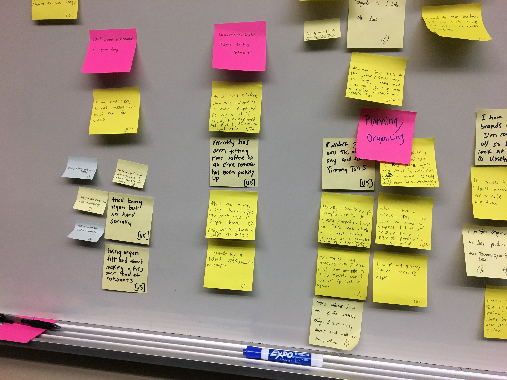
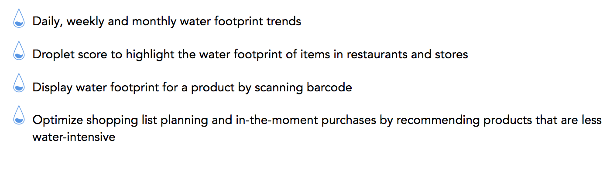
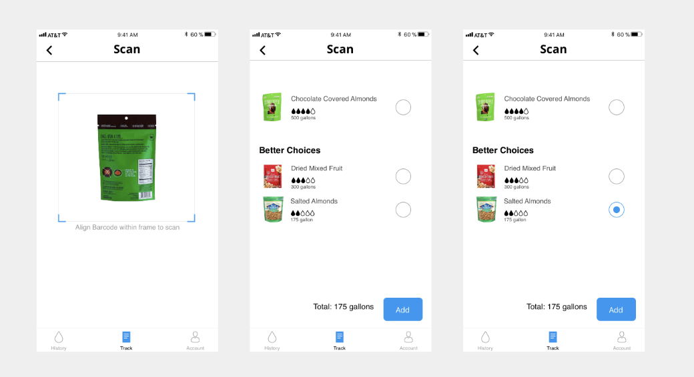
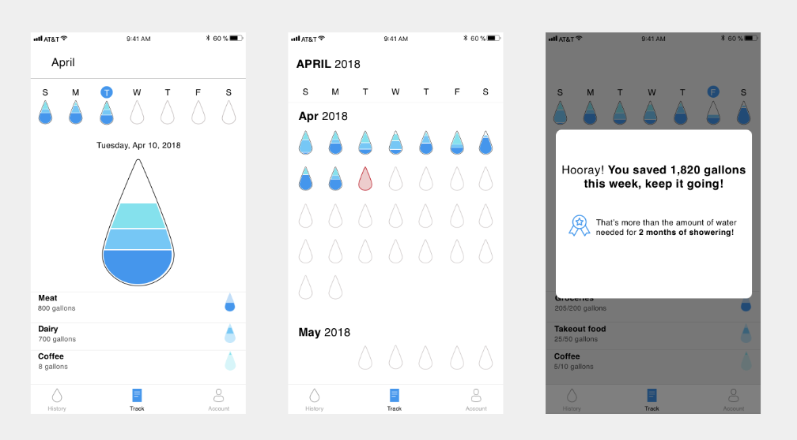
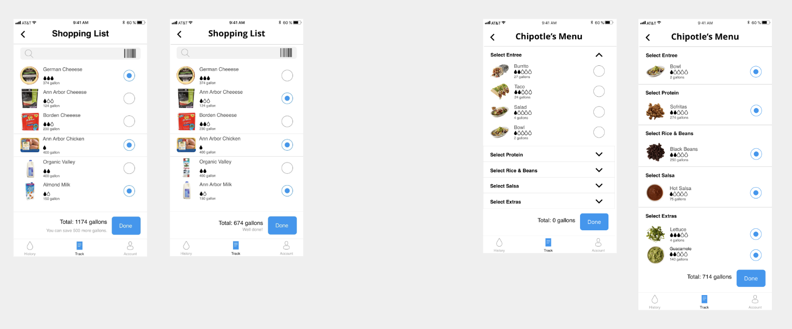

a personal informatics application that measures your water footprint
Project Type: Group
Group Members: Deepak Krishnan, Marcy Held, Shanmeng Liu, Sophie Amberkar
Duration: January 2018 — April 2018
My Role: UX Designer, UX Researcher, Product Manager
Target Audience: people who are either concerned about their water footprint or looking to measure it
Summary
Droplet is a mobile app that helps consumers measure their water footprint through the products that they use. Water
footprint can be defined as the amount of water it takes to manufacture a product such as cheese or a juice carton.
The system calculates the water footprint based on the products one buys at a supermarket and offers less water-intensive
products as an alternative. It also calculates the water footprint of individual meals at restaurants based on the ingredients
used.
Product Mission Droplet seeks to raise awareness of the unforeseen costs of purchasing an
item and make more thougtful purchases
Process
Our group was interested in solving a problem related to sustainability. While there are a number of applications and programs already
available that measure more popular eco-friendly resolutions such as recycling and paper consumption, there are none that measure water
footprint directly. We conducted 20 user interviews to understand how people view sustainability.
Affinity Mapping

The affinity map we created from user interviews served as a great starting point as we narrowed our focus
Our interviews revealed a wide net of user behaviors as well as sustainability issues users are concerned about. As we plotted them
in the form of an affinity map and brainstormed areas to focus on, one fact became very evident — most users admitted to not thinking
about water footprint when purchasing an item.
Interviewee Quote "I don't really think about water footprint when I'm buying say, cheese.
I mean...you don't really see that do you
Design
The project itself aims at being a personal informatics application. Drawing upon theories of personal informatics design such as Norm Activation
and “The Rider and the Elephant” (Haidt, 2006), Droplet encourages and enables users to make better in-the-moment behavior changes.
Key Features

On-demand water footprint score
The app allows users to scan an item's barcode and receive information about the item's water footprint instantaneously.
This information is sourced from the app's database which contains an extensive collection of water footprints of various
commonly purchased products. Droplet also displays less water-intensive alternatives for purchase.

Scan and get instant feedback and recommendations
Encouragement
One of the covenants of Personal Informatics Design is the need to offer encouragement to the user. A major challenge facing designers today is the
28-day problem — the fact that many users do not continue using apps beyond 28 days. In order to keep the user interested, we sought to show the user
just how far they have come in their journey towards improving their water footprint. We did this in a simple manner — through words of encouragement
and comparing a numerical value into normal terms such as the amount of water needed for a routine task like showering.

Encouraging and rewarding the user for eco-sensitive choices is a big part of our design
Self-reporting at the supermarket or restaurant
Droplet allows users to self report their water footprint while on a trip to the grocery store or while getting takeout at a restaurant through the app’s
virtual shopping cart.

Users can add/modify items on the cart as they wish
Final Product Video
And with these designs, we formally present to you: